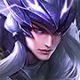

상대 영웅 상세 대응
马超
한 줄: 창 회수 후를 노리고, 경로를 쫓지 않는다.
상대 특성
물리 창 회수 기동 전사. 창을 주우며 이동 속도를 올려 빠르게 진입·이탈하고, 연속 찌르기로 딜러를 노린다. 창이 없을 때 약하고, 이동 경로를 예측당하면 끊긴다. 창 위치와 이동 경로가 핵심.
핵심 위협
창을 주우며 이동 속도를 올려 빠르게 진입·이탈하고, 연속 찌르기로 딜러를 노린다.
라인전 대응
창이 떨어진 방향과 이동 경로를 따라가지 않는다. 창을 회수한 직후의 빈 시간에 2스킬로 붙잡는다.
단계별 운영
1~3레벨: 창이 떨어진 방향과 이동 경로를 따라가지 않고, 창을 회수한 직후를 노린다. 4~5레벨: 창을 회수한 직후 2스킬로 붙잡는다. 중후반: 아군 딜러에게 돌진하는 마초의 경로를 막고, 창이 없을 때 점사한다.
교전·한타
아군 딜러에게 돌진하는 마초의 경로를 막고, 창을 회수한 뒤 제어를 연결한다.
킬각·교환
마초가 창을 주우러 가는 경로를 차단하고, 창을 회수한 직후 2스킬로 붙잡는다. 창이 없는 상태에서 추격하면 오히려 역습당한다.
빌드·운영
저항지화, 홍련두봉, 빙흔지악로 둔화. 점멸로 찌르기를 피한다.
하지 말 것
마초의 이동 경로를 따라가며 스킬을 낭비하는 것.
상세 스킬
4개중국판 공식 스킬 설명을 한국어로 번역했습니다. 스킬명·쿨다운·수치는 패치에 따라 달라질 수 있으므로 게임 내 최신 설명을 우선하세요. 영웅 이름은 중국판 표기를 유지합니다.
-
패시브
섀도우 레이드
马超가 스킬을 출시할 때마다 자신의 이동 속도가 2%씩 증가하며, 이는 최대 3회 중첩 가능하며 5초간 지속됩니다. 马超가 자신의 콜드 라이트 건을 집어 들 때마다 이동 속도가 2초 이내에 20~55포인트씩 점차 증가하고(영웅의 레벨에 따라 증가) 다음 기본 공격이 강화됩니다. 이동 속도가 추가될 때마다 기본 피해가 1~2포인트 증가합니다(영웅의 레벨에 따라 증가). 적에게 적중하면 최대 체력의 3% + 30 체력을 회복하고 모든 스킬의 쿨다운이 1초 감소합니다. 영휘포를 잡기 위해 만인귀초을 출시하면 피해, 체력 회복, 공격 거리가 추가로 20% 증가합니다.
-
1스킬
황폐의 칼날
马超는 지정된 방향으로 콜드 라이트 건을 던져 접촉한 적에게 200/240/280/320/360/400(+60% 물리 계수)의 물리 피해를 입히고 적의 뒤쪽 위치에 삽입합니다. 이 공격이 대상을 직접 격파할 경우, 고정된 거리만큼 계속 날아가며 다음 대상에게 50%의 추가 피해를 입힙니다. 냉간 사격 총은 지상에서 최대 10초 동안 지속될 수 있습니다. 马超가 냉화창에 접근하면 냉화창을 집어들게 됩니다.
-
2스킬
일몰 총
马超는 콜드 파이어 건을 소환하여 지정된 위치를 공격하여 150/180/210/240/270/300(+50% 물리 계수)의 물리 피해를 입히고 작은 범위의 적들에게 2초 동안 30% 감속 효과를 줍니다. 냉화창은 착륙 후 최대 10초 동안 존재할 수 있습니다. 马超가 냉화창에 접근하면 냉화창을 집어들게 됩니다.
-
3스킬
만인귀초
발사될 때마다 马超에 가장 가까운 콜드휘포를 소환해 되돌아온다. 콜드휘포는 비행경로에 있는 적에게 200/300/400(+50% 물리 공격력)의 물리 피해(이동 속도 1포인트당 기본 피해 1~2포인트 추가)와 대상이 잃은 체력의 5%에 해당하는 물리 피해를 입힙니다. 전체 소환 과정은 10초 동안 지속됩니다. (최대 4회 소환 가능)
탱커 기본: 스킬·유세·콤보·빌드·라인전 원칙은 元流之子 탱커 기본 운영에서 먼저 확인할 수 있습니다. 이 페이지는 马超 상대에 맞춘 대응입니다.